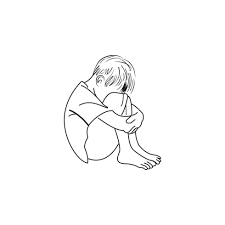

 <div style="text-align:center;margin-top: 40px;"></div>
<div style="text-align:center;margin-top: 40px;">
<a style="font-size:20px;padding-right: 20px;" href="home.html">Home</a>
<a style="font-size:20px;padding-right: 20px;" href="psyco.html">Psychology</a>
<a style="font-size:20px;padding-right: 20px;" href="physical and mental.html">Physical and Mental</a>
<a style="font-size:20px;padding-right: 20px;" href="နည်းလမ်းများ.html">နည်းလမ်းများ</a>
</div>


<h1 style="font-size:50px;text-align:center;color: blue;margin-top: 10px;">Sad Boy</h1>

<p style="font-size:20px;text-align:center;line-height: 2.5;">သင့်ဘဝတွင် ဝမ်းနည်းမှုများနှင့် ပြည်နှက်နေပါက ကျွန်တော်တို့က<br> ပျော်ရျွင်မှုရအောင်ကူညီပေးပါမည်။</p>

<hr>  
 <h1 style="font-size:20px;text-align:center;color: blue;margin-top: 10px;">Psychology</h1>
<div style="text-align:left;"><a style="font-size:25px;colour:brown" href=" https://mymyeo.com/blog/2023/09/20/sadness-%E1%80%9D%E1%80%99%E1%80%BA%E1%80%B8%E1%80%94%E1%80%8A%E1%80%BA%E1%80%B8%E1%80%99%E1%80%BE%E1%80%AF-vs-depression-%E1%80%85%E1%80%AD%E1%80%90%E1%80%BA%E1%80%93%E1%80%AB%E1%80%90/">What is sad?</a></div>
<div style="text-align:left;"><a style="font-size:25px;colour:brown" href=" https://hellosayarwon.com/healthy-mind/mood-disorder/%E1%80%80%E1%80%AD%E1%80%AF%E1%80%9A%E1%80%B9%E1%80%BB%E1%80%96%E1%80%85%E1%80%B9%E1%80%B1%E1%80%94%E1%80%90%E1%80%AC%E1%80%80-%E1%80%9D%E1%80%99%E1%80%B9%E1%80%B8%E1%80%94%E1%80%8A%E1%80%B9%E1%80%B8/">Sad or Depress</a></div>

